This document covers the build system architecture, dependency management, and development workflow for the Signal trading system. The system uses Bun as the primary runtime and package manager, with Vite for frontend builds and Docker for containerized deployment.
For Docker containerization and process management details, see Docker and Process Management. For environment configuration that affects build behavior, see Environment Configuration.
The Signal trading system uses a modern JavaScript build toolchain centered around Bun as both the package manager and runtime environment. The build process supports both the main trading application and eight separate micro-frontend applications.
The system uses Bun's native package management with lockfile-based dependency resolution to ensure reproducible builds across environments.

The build system generates artifacts in the ./build directory, which contains both the compiled main application and the micro-frontend bundles. This directory is excluded from version control but included in Docker builds.
| Component | Output Location | Description |
|---|---|---|
| Main Application | ./build/index.cjs |
Compiled trading engine and API server |
| Micro-Frontends | ./build/apps/ |
Individual React application bundles |
| Static Assets | ./build/public/ |
CSS, images, and other static resources |
| Type Definitions | ./build/types/ |
Generated TypeScript declaration files |
The build system excludes several categories of files and directories from both version control and Docker builds:
The development workflow integrates TypeScript compilation, React component building, and dependency management through Bun's unified toolchain.
The build system generates various cache and temporary files that are excluded from version control:
| File Pattern | Purpose | Location |
|---|---|---|
*.tsbuildinfo |
TypeScript incremental build cache | Project root |
.eslintcache |
ESLint linting cache | Project root |
.cache |
General build cache | Project root |
coverage/ |
Test coverage reports | Project root |
*.lcov |
Coverage data files | Project root |
The build system integrates with Docker through a selective file inclusion strategy that excludes development files while including production artifacts.
The Docker build process copies the pre-built artifacts rather than rebuilding from source, optimizing build times and reducing container size.
The build and runtime system generates various log and debug files that are automatically excluded from version control and Docker builds:
| Pattern | Purpose |
|---|---|
mastodon_news*.txt |
Social media data cache |
twitter_news*.txt |
Twitter feed cache |
debug*.txt |
Debug output files |
error.txt |
General error logs |
tool_error.txt |
Tool-specific error logs |
signal_error.txt |
Trading signal error logs |
invalid_signal.txt |
Invalid signal tracking |
These files are generated during runtime and development but are not part of the build artifacts or deployment package.